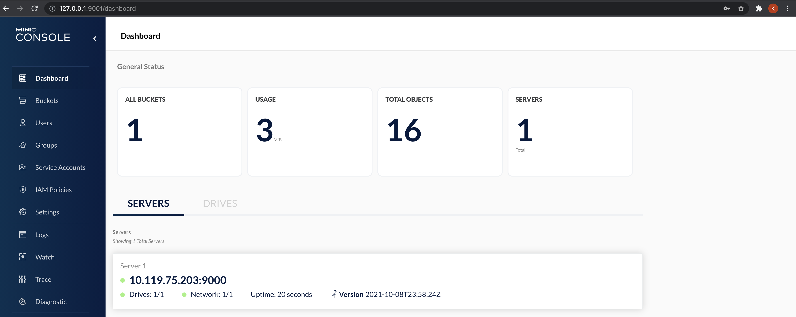
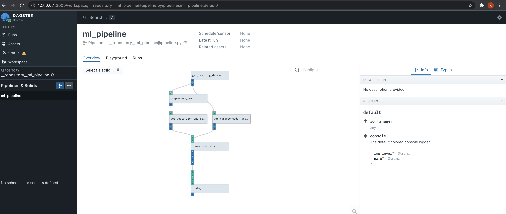
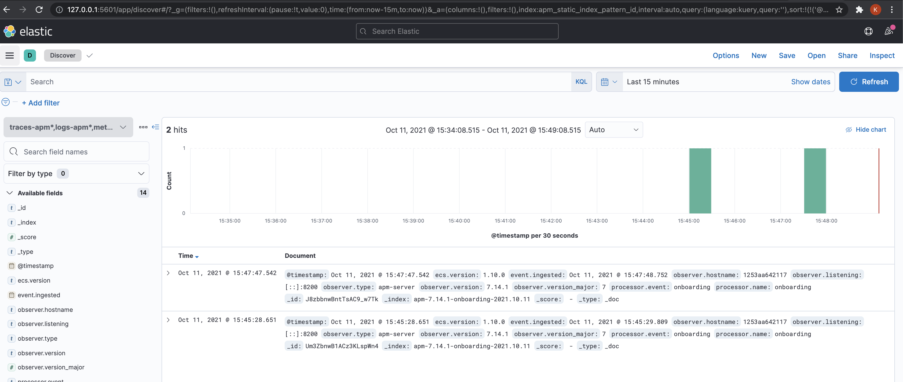
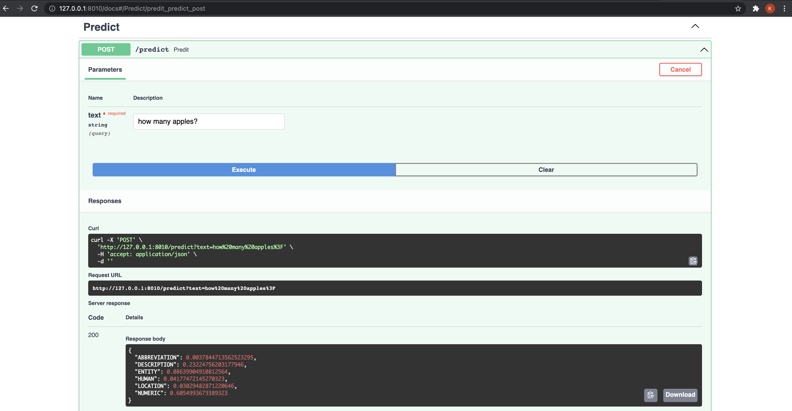

MLOps template - Part 1, Setup
In this series of posts, we will take a small dataset and go through various
steps like building Data pipelines, ML workflow management, API development
and Monitoring.
These steps are necessary for operationalization of any machine-learning based
model.
Note
These posts are in no way exhaustive in covering the breadth of MLOps.
Several key pieces like the CI/CD pipeline, monitoring for drift, etc are missing at the moment, which might get added later.
💻 Stack
We will be using the following tools in this project
- Data Pipeline: Dagster
- ML registry: MLflow
- API Development: FastAPI
- Monitoring: ElasticAPM
⚙️ Dev Setup
Poetry (Dependency management)
$ curl -sSL https://raw.githubusercontent.com/python-poetry/poetry/master/get-poetry.py | python -
$ poetry --version
# Poetry version 1.1.10
pre-commit (Static code analysis)
$ pip install pre-commit
$ pre-commit --version
# pre-commit 2.15.0
Minio (S3 compatible object storage)
Follow the instructions here - Minio installation.
For Mac users
brew install minio/stable/minio
Install python packages
$ poetry install
# Installing dependencies from lock file
# No dependencies to install or update
# Installing the current project: mlops (0.1.0)
MLflow
$ poetry shell
$ export MLFLOW_S3_ENDPOINT_URL=http://127.0.0.1:9000
$ export AWS_ACCESS_KEY_ID=minioadmin
$ export AWS_SECRET_ACCESS_KEY=minioadmin
# make sure that the backend store and artifact locations are same in the .env file as well
$ mlflow server \
--backend-store-uri sqlite:///mlflow.db \
--default-artifact-root s3://mlflow \
--host 0.0.0.0

MinIO
$ export MINIO_ROOT_USER=minioadmin
$ export MINIO_ROOT_PASSWORD=minioadmin
$ mkdir minio_data
$ minio server minio_data --console-address ":9001"
# API: http://192.168.29.103:9000 http://10.119.80.13:9000 http://127.0.0.1:9000
# RootUser: minioadmin
# RootPass: minioadmin
# Console: http://192.168.29.103:9001 http://10.119.80.13:9001 http://127.0.0.1:9001
# RootUser: minioadmin
# RootPass: minioadmin
# Command-line: https://docs.min.io/docs/minio-client-quickstart-guide
# $ mc alias set myminio http://192.168.29.103:9000 minioadmin minioadmin
# Documentation: https://docs.min.io
http://127.0.0.1:9001/buckets/ and create a bucket called mlflow.

Dagster
$ poetry shell
$ dagit -f mlops/pipeline.py

ElasticAPM
$ docker-compose -f docker-compose-monitoring.yaml up

FastAPI
$ poetry shell
$ export PYTHONPATH=.
$ python mlops/app/application.py
